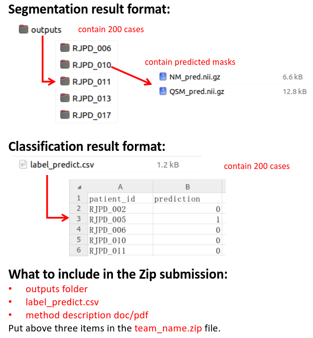

提交指南
对双侧半球(左和右)的每个脑区，我们计算：
| 类别 | 权重 | 描述 |
|---|---|---|
| 模态权重 | QSM: 0.6 NM: 0.4 |
每种成像模式的相对重要性 |
| QSM脑区权重 |
尾状核: 1.0 壳核: 1.0 苍白球: 1.0 丘脑底核: 1.2 黑质: 1.5 红核: 1.1 齿状核: 1.0 |
QSM中每个脑区的相对重要性 |
| NM脑区权重 | 黑质: 2.0 | NM中脑区的相对重要性 |
| 指标权重 | Dice: 0.7 Hausdorff: 0.3 |
每个评估指标的相对重要性 |
团队的综合得分计算如下：
团队按综合得分降序排名。最高可能得分为9.8(所有脑区完美分割)。
我们使用准确率作为分类任务的评估指标。结果.csv文件应包含所有测试案例的0-1预测。
1. 提交说明
📨 方法： 仅接受电子邮件提交。
要求：
请严格按照以下方式组织文件：

图1: 要求的提交文件结构
重要注意事项：